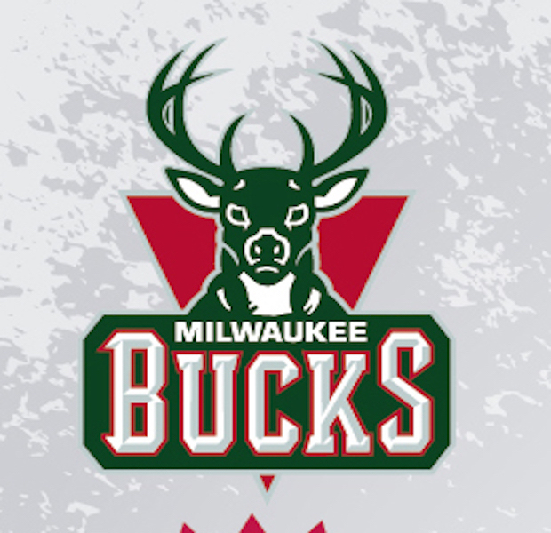
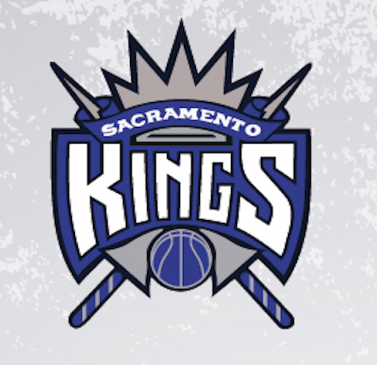
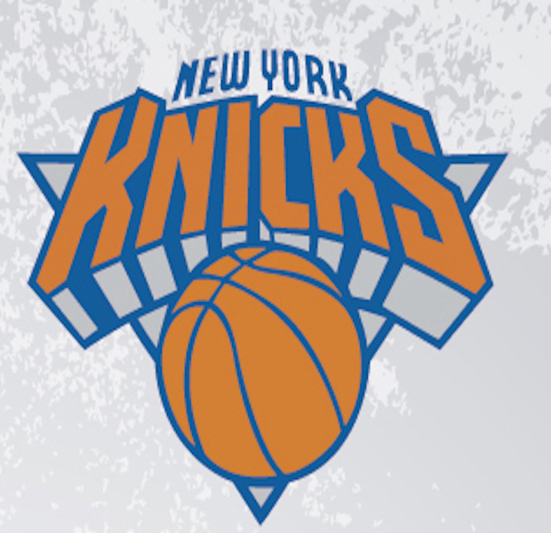
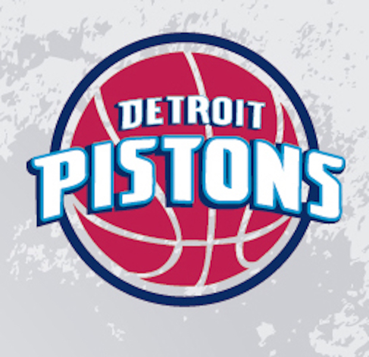
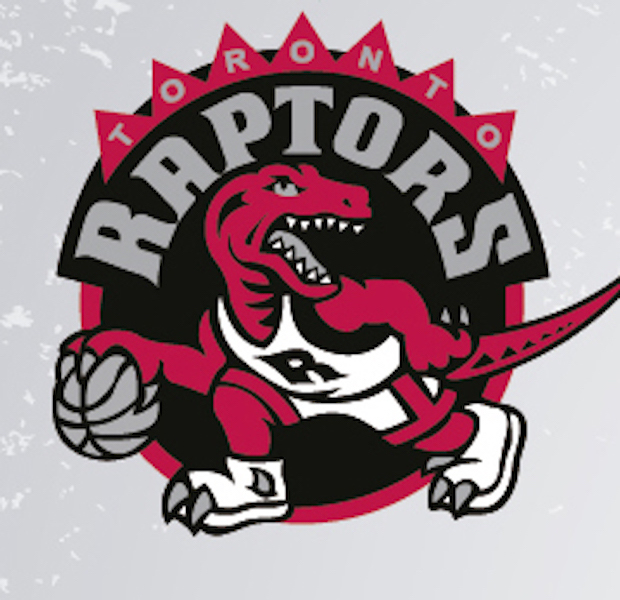

Moje hobby - koszykówka
GALERIA





Milwaukee Bucks – amerykański klub koszykarski, grający w lidze NBA, mający swoją siedzibę w Milwaukee w stanie Wisconsin.
Klub istnieje od 1968. Jego właścicielem jest senator Herb Kohl.WIĘCEJ INFO
Sacramento Kings – amerykański klub koszykarski, mający siedzibę w Sacramento, w stanie Kalifornia.
Występują w Dywizji Pacyficznej, Konferencji Zachodniej w National Basketball Association.
WIĘCEJ INFO
New York Knickerbockers, popularnie znani jako Knicks – amerykańska zawodowa drużyna koszykarska, mająca swoją siedzibę w Nowym Jorku, w stanie Nowy Jork.
Występują w dywizji Atlantyckiej, Konferencji Wschodniej, w lidze National Basketball Association.
WIĘCEJ INFO
Detroit Pistons – amerykański klub koszykarski, mający siedzibę w Auburn Hills w stanie Michigan.
Występują w Dywizji Centralnej, Konferencji Wschodniej w National Basketball Association (NBA)
WIĘCEJ INFO
Toronto Raptors – kanadyjski zawodowy zespół koszykarski grający w lidze NBA, założony w 1995.
Obecnie gra w Konferencji Wschodniej w Atlantic Division.
WIĘCEJ INFO
TABELA
| Klub |
Ranking |
| Bucks |
3 |
| Kings |
1 |
| Knicks |
4 |
| Pistons |
5 |
| Raptors |
2 |